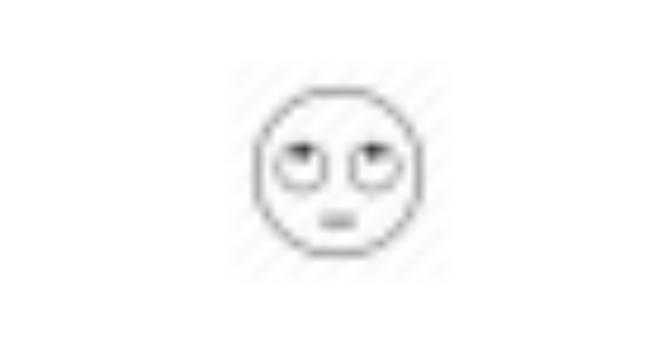

Capítulo 4 Solução
4.1 Segmentação e classificação
Um problema de resolver o CAPTCHA diretamente é que a variável resposta \(\mathbf y\) tem um número exponencial de combinações. Na formulação do capítulo anterior, nossa resposta é uma palavra de \(L\) caracteres, sendo que cada caractere \(c_j\) pode ter \(|\mathcal A|\) valores. Nessa construção, o total de combinações é \(|\mathcal A|^L\).
Por exemplo, um CAPTCHA com \(L=6\) letras e \(|\mathcal A| = 36\) possibilidades em cada letra (26 letras do alfabeto e 10 algarismos), possui um total de 2.176.782.336 (> 2 bilhões) combinações. Modelar essas imagens diretamente através de uma única variável resposta categórica é inviável.
Por isso, uma forma de resolver CAPTCHAs é separando o problema em duas tarefas: segmentar e classificar. A tarefa de segmentação consiste em receber uma imagem com várias letras e detectar pontos de corte, separando-a em várias imagens de uma letra. Já a classificação consiste em receber uma imagem com uma letra e identificar o caractere correspondente. Nesse caso, a resposta é reduzida para \(|\mathcal A|\) categorias, que cresce linearmente e, portanto, tratável.
A literatura mostra através de estudos empíricos que a tarefa de segmentar é mais difícil do que a tarefa de classificar (Bursztein et al. 2014). Isso acontece porque o problema de classificação de letras segmentadas é similar ao problema de reconhecimento de caracteres (Optical Character Recognition, OCR), que é amplamente estudado e pode ser considerado resolvido. A segmentação, no entanto, é um problema em aberto e faz parte da literatura de oclusão de objetos em visão computacional.
Por esse motivo, os desenvolvedores de CAPTCHAs de imagens baseadas em texto têm explorado métodos de dificultar a segmentação. As principais formas são i) colar os caracteres e ii) adicionar linhas ligando os dígitos. Essas técnicas são combinadas com a adição de ruído e distorção de caracteres para compor a imagem final.
Vamos usar como exemplo o CAPTCHA do Tribunal de Justiça de Minas Gerais (TJMG). Nesse caso, temos \(L=4\) e \(|\mathcal A|=10\), apenas os dez algarismos.
A Figura ?? mostra um exemplo do captcha do TJMG. Podemos notar a utilização de distorção de catacteres e adição de linhas ligando os dígitos como formas de evitar a resolução automática.
Nesse caso, podemos resolver o problema da segmentação realizando cortes fixos na imagem. Podemos também limitar os eixos x, tirando os espaços vazios à esquerda e à direita e y, removendo espaços superiores e inferiores. Por último, transformamos a imagem em escala de cinza. O resultado dessas operações de pré-processamento estão na Figura ??.
O resultado são cinco imagens de dimensões 26x20, associadas a cada caractere. O próximo passo é transformar o banco de dados num formato tratável por modelos tradicionais de regressão. Para isso, colocamos cada pixel em uma coluna da nossa base de dados. No caso do TJMG, cada CAPTCHA gera uma tabela de 5 linhas e 520 (26 * 20) colunas. A Tabela ?? mostra as primeiras seis colunas dessa base.
Agora basta rodar o mesmo para toda a base de treino e rodar um modelo. Nesse exemplo, utilizamos uma base de 1500 CAPTCHAs classificados. O resultado após o pré-processamento é uma base com 7500 linhas e 520 colunas. Escolhemos manter 6000 linhas para treino e as 1500 restantes para teste. Utilizamos um modelo de florestas aleatórias para o exemplo (Breiman 2001).
O resultado do modelo pode ser verificado na Tabela 4.1, que mostra os observados versus preditos na base de teste. O acerto foi de 99.6% em cada caractere. Assumindo que o erro não depende da posição do caractere no CAPTCHA, o acerto para a imagem completa é de aproximadamente 98%.
| y | 0 | 1 | 2 | 3 | 4 | 5 | 6 | 7 | 8 | 9 |
|---|---|---|---|---|---|---|---|---|---|---|
| 0 | 140 | . | . | . | . | . | . | . | . | . |
| 1 | . | 164 | . | . | . | . | . | . | . | . |
| 2 | . | . | 164 | . | . | . | . | . | . | . |
| 3 | . | . | . | 156 | . | . | . | . | . | . |
| 4 | . | 1 | . | . | 143 | . | . | . | . | . |
| 5 | . | . | . | . | . | 133 | . | . | . | . |
| 6 | . | . | . | . | . | . | 152 | . | . | . |
| 7 | . | . | . | . | . | . | . | 144 | . | . |
| 8 | . | . | . | . | . | . | . | . | 158 | . |
| 9 | . | . | . | . | . | . | . | . | . | 145 |
O resultado para o TJMG é bastante satisfatório, mas não generaliza para outros CAPTCHAs. Tome por exemplo o CAPTCHA da Receita Federal (RFB) da Figura ??. Nesse caso, a posição dos caracteres muda significativamente de imagem para imagem, e assim fica difícil cortar em pedaços.
A mesma técnica aplicada ao CAPTCHA RFB apresentou acerto de 78.8% do caractere, o que equivale a apenas 23.8% de acerto para toda a imagem. Claro que seria possível melhorar o poder preditivo com ajustes nos hipeparâmetros do modelo, mas o problema essencial nesse caso está na qualidade segmentação, e não na classificação dos caracteres.
Outro problema dessa técnica é que ela é incapaz de trabalhar com CAPTCHAs de comprimento variável. Nesse caso, seria necessário construir um modelo não supervisionado para identificar a posição das letras, o que adiciona um grau a mais de complexidade na resolução do CAPTCHA.
Por isso, faz-se necessária uma abordagem que trabalha com problema completo, sem passar explicitamente pela fase de segmentação. Ao invés de cortar a imagem, vamos extrair detalhes da imagem completa automaticamente e utilizar essas características como variáveis preditoras num modelo de regressão. Chamaremos essa abordagem de força bruta.
4.2 Força-bruta
A abordagem de força bruta utiliza redes neurais convolucionais. Para explicar o funcionamento dessa técnica, vamos primeiro apresentar definições para redes neurais e para a operação de convolução. Em seguida, vamos juntar os dois conceitos para construir o modelo utilizado nos CAPTCHAs.
4.2.1 Redes neurais
Uma rede neural pode ser entendida como uma extensão de modelos lineares generalizados com a adição de uma arquitetura aos componentes do modelo. Para mostrar esse conceito, vamos partir da definição de um modelo regressão logística até construir uma rede neural com camadas ocultas.
4.2.1.1 Regressão logística
O modelo linear generalizado é composto por três elementos: componente aleatório, componente sistemático e função de ligação.
O componente aleatório é uma variável aleatória com distribuição pertencente à família exponencial, que dá origem à verossimilhança do modelo. O componente sistemático é uma combinação linear das variáveis preditoras com um vetor de parâmetros. A função de ligação é uma operação que leva a componente sistemática no valor esperado da componente aleatória. Uma forma comum de definir a ligação é propondo uma função com domínio nos números reais e contradomínio igual ao suporte do componente aleatório. Dessa forma, não é necessário impor restrições aos parâmetros da componente sistemática para que os valores ajustados variem na mesma faixa que o componente aletório.

No exemplo da regressão logística, o componente aleatório tem distribuição Bernoulli com média \(\mu\). O componente sistemático é a combinação linear \(\mathbf X \boldsymbol \beta\) e a função de ligação é a inversa de
\[ g(\mu) = \log\left(\frac{\mu}{1-\mu}\right) \]
A partir de uma amostra \(y_1, \dots, y_n\) e observando que \(\mu_i = g^{-1}(\mathbf X_i\boldsymbol\beta)\), a verossimilhança do modelo é dada por
\[ \mathcal L(\boldsymbol \beta|\mathbf y) = \prod_{i=1}^n f(y_i|\boldsymbol\beta) = \prod_{i=1}^n\mu_i^{y_i}(1-\mu_i)^{1-y_i} \]
A log-verossimilhança é dada por
\[ l(\boldsymbol \beta|\mathbf y) = \sum_{i=1}^n y_i\log(\mu_i) + (1-y_i)\log(1-\mu_i) \]
Uma forma útil de olhar para a verossimilhança é a partir da função desvio, dada por
\[ D(\mathbf y|\boldsymbol \beta) = l(\mathbf y|\mathbf y) - l(\boldsymbol \beta|\mathbf y), \]
onde \(l(\mathbf y|\mathbf y)\) é a verossimilhança do modelo saturado, ou seja, calculada com \(\mathbf y\) no lugar de \(\boldsymbol \mu\). A partir de um modelo ajustado, a função desvio pode ser interpretada como a distância entre a verossimilhança do modelo ajustado e a verossimilhança do modelo com um parâmetro para cada observação.
Uma propriedade interessante da função desvio é que ela equivale à divergência de Kullback-Leibler. Por exemplo, para duas variáveis aleatórias com distribuição Bernoulli de parâmetros \(p\) e \(q\), respectivamente, a divergência de Kullback-Leibler é dada por
\[ D_{KL}(p||q) = p\log\left(\frac p q\right) + (1-p)\log\left(\frac{1-p}{1-q}\right) \]
É fácil ver que
\[ \begin{aligned} D(\mathbf y|{ \boldsymbol \beta}) &= \sum_{i=1}^n y_i\log(y_i) + (1-y_i)\log(1-y_i) - \sum_{i=1}^n y_i\log(\mu_i) + (1-y_i)\log(1-\mu_i) \\ &=\sum_{i=1}^ny_i\log\left(\frac{y_i}{\mu_i}\right) + (1-y_i)\log\left(\frac{1-y_i}{1-\mu_i}\right) \\ &= \sum_{i=1}^n D_{KL}(y_i||\mu_i) \\ &= D_{KL}(\mathbf y||{\boldsymbol\mu}). \end{aligned} \]
Outra propriedade interessante é que o desvio identifica unicamente a verossimilhança do modelo. De fato, podemos reformular a definição do modelo linear generalizado a partir da especificação do desvio ou da divergência de Kullback-Leibler no lugar do componente aleatório. Essa propriedade será útil na comparação com redes neurais.
Os estimadores de máxima verossimilhança de \(\boldsymbol \beta\) são os mesmos que minimizam a função desvio. Graças à concavidade da divergência de Kullback-Leibler, Isso pode ser feito igualando os componentes do gradiente do desvio a zero e isolando os valores de \(\boldsymbol \beta\):
\[ \nabla_{\boldsymbol \beta} D(\mathbf y|{ \boldsymbol \beta}) = \mathbf 0 \]
Como não é possível realizar essa operação analiticamente, utilizamos métodos iterativos. Existem dois principais métodos iterativos concorrentes: a descida de gradiente e o método de Newton-Raphson. No paradigma de modelos lineares generalizados, o método de Newton-Raphson é mais comum pois i) ele utiliza a segunda derivada e converge mais rápido que o método da descida de gradiente, que utiliza somente a primeira e ii) é possível demonstrar que ele equivale à aplicação iterada de mínimos quadrados ponderados, o que facilita significativamente a implementação da solução. No paradigma de redes neurais, a descida de gradiente é mais comum por conta das vantagens backpropagation, que veremos na próxima subseção.
Em resumo, podemos concluir que
- Um modelo linear generalizado pode ser definido por três componentes: a divergência de Kullback-Leibler, o preditor linear e a função de ligação.
- A estimação dos parâmetros do modelo é realizada via descida de gradiente ou Newton-Raphson.
Em seguida, veremos que a rede neural aparece quando utilizamos o componente sistemático e a função de ligação várias vezes.
4.2.1.2 Extensão para redes neurais
Uma forma de estender o modelo linear generalizado é considerando que o resultado da função de ligação aplicada ao componente sistemático é uma nova covariável \(z\). Assim, temos
\[ \begin{aligned} \mathbf z &= g^{-1}(\mathbf X \boldsymbol \beta)\\ \boldsymbol\mu &= g^{-1}(\alpha_2\mathbf 1 + \beta_2 \mathbf z) = g^{-1}([\mathbf 1\;\mathbf z]\boldsymbol\beta_2), \end{aligned} \]
em que \(\boldsymbol\beta_2 = [\alpha_2\;\beta_2]^{\top}\). Agora, podemos aumentar o número de covariáveis \(\mathbf z\) para \(k\) covariáveis, de modo que
\[ \begin{aligned} \mathbf z_j &= g^{-1}(\mathbf X \boldsymbol \beta_1^j)\\ \boldsymbol\mu &= g^{-1}(\mathbf Z\boldsymbol\beta_2), \end{aligned} \]
onde \(\mathbf Z = [\mathbf 1\;\mathbf z_1\;\dots\;\mathbf z_k]\). O modelo espeficiado dessa forma também é chamado de multilayer perceptron, ou MLP.
Mesmo com essa mudança, função desvio permanece a mesma, já que construída a partir de \(\boldsymbol \mu\). A única diferença é que agora ela é uma função de \(\boldsymbol \beta_1^j\), \(j=1,\dots,k\) e \(\beta_2\). O ajuste do modelo é realizado da mesma forma:
\[ \nabla_{\{\boldsymbol \beta_1^1, \dots,\boldsymbol \beta_1^k,\boldsymbol \beta_2\}} D(\mathbf y|{ \boldsymbol \beta_1^1, \dots,\boldsymbol \beta_1^k,\boldsymbol \beta_2}) = \mathbf 0 \]
A vantagem dessa extensão é que adicionamos não linearidade ao modelo. Isso nos permite modelar relações mais complexas entre as preditoras e a resposta, o que pode resultar em melhores predições. De fato, é possível demonstrar que uma rede neural com uma camada oculta pode estima qualquer função contínua entre \(\mathbf X\) e \(\mathbf y\). A desvantagem é que a estimação via Newton-Raphson é complicada de calcular.
É nesse momento que aparecem as vantagens da descida de gradiente. Primeiro, defina \(\boldsymbol \beta = \{\boldsymbol \beta_1^1, \dots,\boldsymbol \beta_1^k,\boldsymbol \beta_2\}\). Utilizando a regra da cadeia, a derivada parcial da função desvio em relação a \(\beta_{1,l}^{j}\) é dado por
\[ \frac{\partial D(\mathbf y|\boldsymbol\beta)}{\partial \beta_{1,l}^{j}} = \sum_{i=1}^n\frac{\partial D(\mathbf y|\boldsymbol\beta)}{\partial z_{j,i}} \frac{\partial z_{j,i}}{\partial \beta_{1,l}^{j}} . \]
As derivadas em relação aos elementos de \(\boldsymbol \beta_2\) ocorrem diretamente, como na especificação em apenas um nível. Todas essas derivadas são fáceis de calcular e têm forma analítica definida. A aplicação da regra da cadeia de forma iterada nesse contexto é chamada de backpropagation.
4.2.1.3 Sinônimos e generalizações
A literatura de redes neurais costuma trocar o nome função de ligação por ativação. Isso ocorre por motivos históricos, já que as redes neurais foram inicialmente inspiradas na ativação de sinapses de neurônios. No contexto de redes neurais, o objetivo da função de ativação não é, necessariamente, modificar a faixa de variação do contradomínio, pois o resultado após a função pode ser uma nova covariável. Isso sugere a existência de certa liberdade na escolha de ativações. A única restrição é que a função de ativação deve ser não linear, pois, se fosse linear, a aplicação de várias camadas de funções resultaria numa única combinação linear. As ativações mais populares são aquelas que têm derivadas simples.
Já a verossimilhança ou o desvio são substituídos por uma função de perda. A natureza probabilística do modelo é considerada indiretamente através da função desvio, como vimos anteriormente. No entanto, ao invés de trabalhar com o desvio, os pesquisadores de redes neurais definem genericamente uma função de perda que mensura uma discrepância entre os valores observados e estimados. Uma escolha razoável de função de perda é a própria divergência de Kullback-Leibler, calculada com base no suporte da variável resposta, gerando a função desvio. No entanto, dependendo da aplicação, podemos escolher outras perdas, que podem gerar distribuições de probabilidades sem formato analítico específico.
Por último, a aplicação de camadas de não-linearidades podem ser representadas através de um grafo direcionado acíclico. Essa representação é vantajosa por dois motivos. O primeiro é que a aplicação facilita a especificação e entendimento do modelo e seus parâmetros, que podem ficar com notação carregada na especificação por fórmulas matemáticas. A segunda é que é possível utilizar conhecimentos de teoria dos grafos para aumentar a eficiência dos algoritmos. Por exemplo, é possível aproveitar parte dos cálculos do backpropagation na obtenção das derivadas parciais da função de perda (Abadi et al. 2016).
Em resumo, podemos concluir que
- Uma rede neural é uma extensão de modelos lineares generalizados que aplica combinações lineares e funções de ligação de forma iterada.
- A estimação dos parâmetros é realizada por descida de gradiente, explorando as vantagens do backpropagation.
- Funções de ligação são chamadas de funções de ativação.
- A função desvio é substituída por funções de perda mais gerais.
- A aplicação iterada de operações pode ser representada por um grafo direcionado acíclico.
Existem diversas formas de definir, desenhar e apresentar os conceitos básicos de redes neurais e a descida de gradiente. As melhores são apresentadas em blogs, vídeos e aplicativos, onde as operações são apresentadas de forma interativa. O racional apresentado nesse texto buscou mostrar a relação intrínseca entre a regressão logística e as redes neurais.
4.2.2 A operação de convolução
Convolução em imagens é uma operação usada nas áreas de visão computacional e processamento de sinais. Ela é utilizada para detectar padrões e aplicar filtros em imagens. Na prática, o que ela faz é calcular um novo valor para um pixel na posição \((i,j)\) de uma imagem com base nos valores dos pixels da vizinhança.
Uma forma organizada de fazer essa soma ponderada é criando uma matriz de pesos. Com ela, não é necessário procurar os pontos da vizinhança. Para cada ponto \((i,j)\), obtemos a matriz de vizinhança, multiplicamos pontualmente pela matriz de pesos e somamos os valores resultantes. Chamaremos essa matriz de pesos de kernel.
Considere
\[ K = \left[\begin{array}{rrr}-1&-1&-1\\0&0&0\\1&1&1\end{array}\right] \]
e a seguinte imagem:

Tome por exemplo o ponto \((i,j) = (12,16)\). A vizinhança 3x3 em torno desse ponto é dada por
\[ P_{i,j} = \left[\begin{array}{rrr} 0.98 & 0.53 & 0.79 \\ 0.97 & 0.99 & 1.00 \\ 0.98 & 1.00 & 1.00 \end{array}\right] \]
A operação de convolução é feita da seguinte forma:
\[ \begin{aligned} (P_{12,16} *K )_{12,16} &= k_{1,1}p_{11,15} + k_{1,2}p_{11,16} + k_{1,3}p_{11,17} + \\ &+ k_{2,1}p_{12,15} + k_{2,2}p_{12,16} + k_{2,3}p_{12,17} + \\ &+ k_{3,1}p_{13,15} + k_{3,2}p_{13,16} + k_{3,3}p_{13,17} \end{aligned} \]
Esse é o valor a ser colocado no ponto \((i,j)\). Isso funciona em todos os pontos que não estão na borda da imagem.
Existem duas formas de trabalhar com as bordas da imagem. A primeira é preenchendo as bordas com zeros, de forma a considerar apenas os pontos da imagem. A segunda é descartar os pontos da borda e retornar uma imagem menor, contendo somente os pixels em que foi possível aplicar todo o kernel.
No nosso caso, o resultado da convolução fica como na Figura ??. Essa matriz não foi escolhida por acaso. Ela serve para destacar padrões horizontais da imagem. Como a primeira linha é formada -1s e a última é formada por 1s, a matriz fica com valor alto se a parte de cima do pixel for preta e a parte de baixo for branca (grande * 1 + pequeno * (-1)). A parte destacada da imagem acabou sendo os olhos (pois temos maior concentração de pixels pretos ali), além das extremidades superior e inferior do rosto.
Aplicando o kernel vertical
\[ K = \left[\begin{array}{rrr}-1&0&1\\-1&0&1\\-1&0&1\end{array}\right], \]
a parte destacada do rosto são as extremidades dos lados:
A aplicação de convoluções em CAPTCHAs é direta. Nesse caso, vamos adicionar uma constante numérica ao resuldado da convolução. Isso pode auxiliar na visualização, pois controlamos os valores que ficam dentro do intervalo \([0,1]\). Mais adiante veremos que esse será o intercepto da regressão.
Vamos partir do CAPTCHA da RFB abaixo
Esse é o resultado de adicionar o kernel vertical e bias de 0.6.
Em seguida observamos o kernel horizontal. Note que identificamos padrões das linhas horizontais que tentam atrapalhar a visão das letras.
Também vamos introduzir uma função chamada ReLu. ReLu significa Restricted Linear Unit e é uma função que zera tudo o que é negativo e mantém tudo aquilo que é positivo inalterado. Ou seja,
\[ ReLu(x) = \frac{x + |x|}{2} \]
ReLu não é útil para visualização da imagem, pois a substituição de valores negativos por zero já é feita automaticamente. No entanto, podemos aplicar várias convoluções iteradamente e separá-las por aplicações da função ReLu. Como a função ReLu é não linear, essa iteração gera resultados que não seriam possíveis de obter somente com aplicações da operação convolução.
Na prática, o que queremos é treinar os valores do kernel aplicado, buscando obter imagens transformadas que aumentem o poder preditivo. Nesse sentido, a aplicação de convoluções, soma de constantes e ReLu são as operações que substituem a multiplicação de matrizes, adição de intercepto e aplicação da função de ligação na regressão logística, respectivamente. Ou seja, uma rede neural convolucional é apenas uma forma diferente de implementar os conceitos.
4.2.3 Redes neurais convolucionais
Considere uma observação de uma imagem com 2x2 pixels abaixo. Note que se o interesse for utilizar essa matriz numa regressão logística, teríamos uma linha de nossa base de dados, com nove colunas. Ou seja, a regressão teria nove parâmetros associados.
\[ P = \left[\begin{array}{rrr} p_{11} & p_{12} & p_{13} \\ p_{21} & p_{22} & p_{23} \\ p_{31} & p_{32} & p_{33} \end{array}\right] \]
Considere agora o kernel \(W\), também 3x3:
\[ K = \left[\begin{array}{rrr} k_{11} & k_{12} & k_{13} \\ k_{21} & k_{22} & k_{23} \\ k_{31} & k_{32} & k_{33} \end{array}\right] \]
A operação convolução resulta numa nova matriz 3x3, em que cada elemento é uma combinação linear de elementos de \(P\) e \(K\). De fato, é possível mostrar que o resultado da convolução é o resultado de uma multiplicação de matrizes obtida através da matriz circulante de \(K\) (Gray 2006). Ou seja, nesse caso, estamos fazendo uma nova regressão logística, mas com os valores dos dados modificados.
Se, ao invés disso, considerarmos a matriz 2x2,
\[ K = \left[\begin{array}{rr} k_{11} & k_{12}\\ k_{21} & k_{22} \end{array}\right] \]
estamos na prática reduzindo o problema de regressão logística para apenas quatro parâmetros.
O modelo força-bruta é uma adaptação do clássico modelo LeNet-5 (LeCun and others 2015). Esse modelo aplica convolução 3 vezes consecutivas, adicionando o viés e a função ReLu em cada nível. Após cada convolução, também aplicamos uma operação chamada max pooling, que reduz a resolução da imagem, tomando o valor máximo da vizinhança de cada ponto. Após a aplicação das convoluções, as imagens são remodeladas no formato retangular padrão (uma linha por imagem) e aplicamos duas camadas de redes neurais comuns, como vimos anteriormente.
Após a realização de todas as operações, os números resultantes não estão entre zero e um. Por isso, aplicamos a ativação softmax, que é a generalização da ativação logística, mas para uma resposta com vários resultados possíveis
\[ softmax(x_i) = \frac{e^{x_i}}{\sum_ie^{x_i}} \]
Em resumo, as operações que realizamos na rede neural convolucional são
- Tomar o input inicial (imagem).
- Multiplicar (convoluir) por matrizes de pesos \(W\).
- Adicionar um viés (ou intercepto) \(b\).
- Aplicar uma função de ligação (ou ativação), por exemplo ReLu.
- Reduzir a resolução do resultado.
- Voltar para 2 várias vezes.
- Tomar os pesos finais e normalizar (usando a operação softmax) para obter probabilidades dos resultados.
4.2.4 Resultados
Até o momento, aplicamos os modelos de redes neurais convolucionais para cinco CAPTCHAs distintos. Os modelos foram treinados a partir de bases de treino com aproximadamente dez mil exemplos para cada CAPTCHA. Os resultados da aplicação dos modelos estão na Tabela 4.2. Essas taxas foram calculadas com base em 100 novos CAPTCHAs baixados da internet após o ajuste do modelo. Podemos observar que as taxas de acerto são todas muito próximas de 100%. No mínimo essas taxas estão muito próximas do que seres humanos conseguiriam acertar.
| Imagem | Nome | Taxa de acerto |
|---|---|---|
| assets/img/rfb.png | RFB | 98% |
 |
TRT | 98% |
 |
TJMG | 100% |
 |
RSC | 99% |
 |
CADESP | 98% |
Os resultados positivos da aplicação dos modelos força-bruta pode motivar a pergunta: o problema está completamente resolvido? De fato, podemos dizer que CAPTCHAs de imagem baseados em textos são problemas resolvidos, desde que exista uma base de dados classificada. No entanto, esses modelos não funcionam para novos CAPTCHAs e também erram se fizermos pequenas alterações nas imagens. Veremos mais detalhes desse problema no próximo capítulo.
References
Abadi, Martı'n, Paul Barham, Jianmin Chen, Zhifeng Chen, Andy Davis, Jeffrey Dean, Matthieu Devin, et al. 2016. “Tensorflow: A System for Large-Scale Machine Learning.” In OSDI, 16:265–83.
Breiman, Leo. 2001. “Random Forests.” Machine Learning 45 (1). Springer: 5–32.
Bursztein, Elie, Jonathan Aigrain, Angelika Moscicki, and John C Mitchell. 2014. “The End Is Nigh: Generic Solving of Text-Based Captchas.” In WOOT.
Gray, Robert M. 2006. “Toeplitz and Circulant Matrices: A Review.” Foundations and Trends in Communications and Information Theory 2 (3): 155–239.
LeCun, Yann, and others. 2015. “LeNet-5, Convolutional Neural Networks.” URL: Http://Yann. Lecun. Com/Exdb/Lenet, 20.